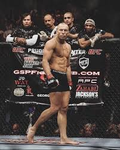

Georges St-Pierre, född 19 maj 1981 i Quebec, Kanada, är en kanadensisk MMA-fighter och UFC-legendar. Han har varit mästare i weltervikt två gånger och har även vunnit mellanviktstiteln. Känd för sin tekniska och atletiska fightingstil, kunde han kontrollera motståndare och anpassa sin strategi i oktagonen. Under sin karriär besegrade han flera toppmotståndare och avslutade sin tävlingskarriär 2019 som en av sportens mest respekterade legender.

 VS
VS
Varför jag skulle vinna mot GSP:
Jag knockar GSP för att jag är ett taktiskt geni! Jag har kollat hans matcher och sett att han alltid lutar sig fram innan en nedtagning. I buren dansar jag runt honom, slänger en kaxig low kick som får honom att snubbla, och sen BAM – en perfekt högerkrok rätt i krysset! Han tappar balansen, och jag låser in en guillotine choke innan han hinner säga "maple syrup". GSP är grym, men jag är bara för självsäker och smart för honom. Segern är min! 😎